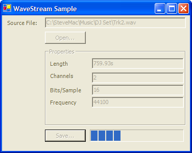
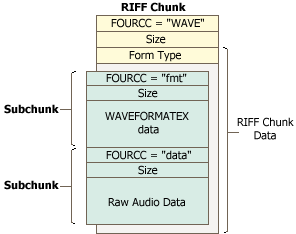

WaveStream CSharp (31K)
WaveStream CSharp (31K)
 WaveStream VB (35K)
WaveStream VB (35K)
 27 Jun 2004
27 Jun 2004
First Posted

WaveStreamReader and WaveStreamWriter
This article describes two classes which provide Stream wrappers around the Windows Multimedia API to work with .WAV files in .NET. These classes allow you to read and write .WAV files directly from managed code. Both C# and VB versions of the code are provided.
About .WAV Files and Multimedia IO
.WAV files use a type of structured file storage in which data is divided into tagged chunks, each of which can contain sub-chunks. This storage type is known as the Resource Interchange File Format, or RIFF, and provides a flexible means of structuring files. The tag for each chunk is defined as a 32-bit value known as the "FOURCC" code - the value consists of the ASCII values of four characters appended to each other (for example "WAVE" is 0x45564157 since "W" is ASCII 0x57, "A" is 41 etc). A diagram of the file structure for a basic wave file is shown below:
Since each chunk defines its size, it is fairly easy to locate particular subchunks in the file. This helps to make the file format extensible, since you can add extra chunks provided you ensure you have all of the required chunks in the correct location in th hierarchy. Many real-world wave files also contain other chunks like "PAD" (to provide a space at the start of the file for extra data).
It would be simple enough to decode RIFF files using managed code, however, you can make it easier by using the Windows Multimedia API, which already contains functions for finding chunks, reading and writing subchunks and seeking in RIFF files. These APIs can make life a lot easier particularly for writing files since theyhandle the structural aspects of the format, such as ensuring the correct form types and sizes are written out into the chunks automatically.
Using The Multimedia API Functions
All of the functions for working with multimedia files are specified in winmm.dll, which has been available on all Windows systems since NT 3.1/Win95. The functions used in this code are specified in the internal WinMMInterop class, which contains structures and declares for the following:
- WAVEFORMATEX - a structure specifying the format of a Wave file.
- MMIOINFO - a structure containing low-level information about a file opened using multi-media IO. Typically applications do not use this information.
- MMCKINFO - structure containing information about a chunk within a RIFF file.
- mmioOpen - opens a RIFF file and returns a handle to the file.
- mmioClose - closes a RIFF file previously opened with mmioOpen.
- mmioDescend - descends into a chunk in the file. Two versions of this declare are provided: one for descending into the top level chunk, where the parent chunk is a null pointer, and the other for descending into a subchunk where the chunk information needs to be specified.
- mmioAscend - performs the reverse of mmioDescend. When the file is open for writing, this causes the chunk size to be written out.
- mmioRead - reads data from the current chunk into a buffer. Two versions of this declare are provided; one for raw byte data and another for the WAVEFORMATEX structure.
- mmioWrite - writes data from a pointer to a buffer into the current chunk.
- mmioCreateChunk - creates a new chunk in the file.
- mmioSeek - seeks to a point in the file.
- mmioStringToFOURCC - converts a FOURCC string to the long code used in the file.
These functions provide everything needed to implement a Stream wrapper on top of a .WAV file.
Buffers, Arrays and Pinning
The multimedia IO functions for reading and writing both use a pointer to a buffer in memory for the data. A .NET Stream object specifies that data is read in or out of the file as a managed byte array. Therefore there needs to be a way to convert to and from buffers and arrays.
This is provided by the Interop GCHandle object. The idea behind this object is that normally the .NET runtime is free to move the physical location of any variable (including arrays) around in memory at any time. This behaviour can be prevented by locking the physical location to a particular address. Once the physical location has been locked, then an address of the data can be found, and used with calls which expect a pointer to a buffer.
This simplified piece of code shows the key parts of the Read routine. First, the buffer is pinned using the Alloc member of the GCHandle object. Then the address can be determined using AddrOfPinnedObject. Finally, once the buffer is finished with the handle has to be freed using the Free method:
Public Overloads Overrides Function Read( _
ByVal buffer As Byte(), _
ByVal offset As Integer, _
ByVal count As Integer) As Integer
Dim handle As GCHandle = GCHandle.Alloc(buffer, GCHandleType.Pinned)
Dim ptrBuffer As IntPtr = handle.AddrOfPinnedObject()
amtRead = WinMMInterop.mmioRead(hMmio, ptrBuffer, count)
If (handle.IsAllocated) Then
handle.Free()
End If
End Function
Obviously doing this may play havoc with the efficiency of the .NET runtime garbage collector, so it ought to be used judiciously. It is also a shame that the reverse of this operation is not possible, as it was (albeit with some hacks) in VB Classic. The idea would be that when you have an unmanaged buffer allocated externally then you could "point" a pinned managed array at it. It would seem that this would be possible. You can achieve this using unsafe pointer manipulation in C#, but pointer manipulation is inherently more difficult than working with an array.
WaveStreamReader and WaveStreamWriter
These classes should be self-explanatory if you've already used a class which extends the Framework's Stream. The only differences over a basic stream are:
- Both the WaveStreamReader and WaveStreamWriter classes provide a method for reading data in short multiples. This is handy for 16-bit wave files.
- Properties are provided for SamplingFrequency,
BitsPerChannel and Channels
of the wave file. You can use these to derive the length of the file in
seconds:
double lengthSeconds = ((reader.Channels * reader.BitsPerSample) / 8); lengthSeconds = reader.Length / (reader.SamplingFrequency * lengthSeconds);
Note that you cannot change these properties for an existing file. In principle bit-depth reduction or expansion isn't too hard; however changing the number of channels doesn't really have any meaning unless you define how the existing audio data maps onto the channels in the new file. Altering the sampling frequency of a file is possible but rather involved, requiring sophisticated interpolation and a digital filter.
The C# version of the code is provided in the download as a strong-named binary which can be registered into the GAC if you just want to use the classes as fit-and-forget rather than using the code directly.
Sample Application
The sample application for this article is particularly straightforward: it demonstrates opening files, showing information about the wave file, and then performing a passthrough through the reader and writer classes to write out the same wave file. (This is admitted pathetic, since it can also be achieved rather more simply using File.Copy, but it does demonstrate that the class behaves correctly). However, it should be clear that more interesting applications such as compression, volume normalization, silencing, FFT and so forth can all be achieved once you have access to the data in the wave form.
Conclusion
This sample has provided classes for working with non-compressed .WAV files in the .NET framework. The Interop routines provided are also useful for working with other multimedia files such as AVIs.